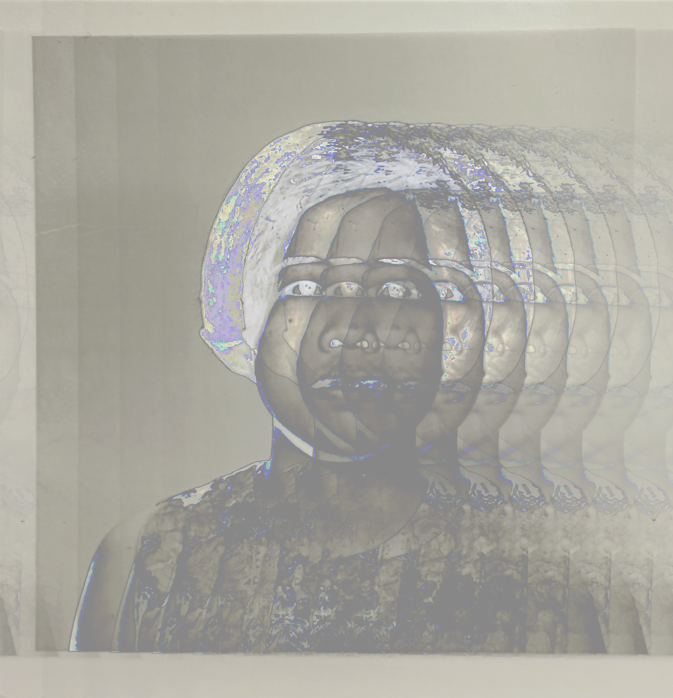
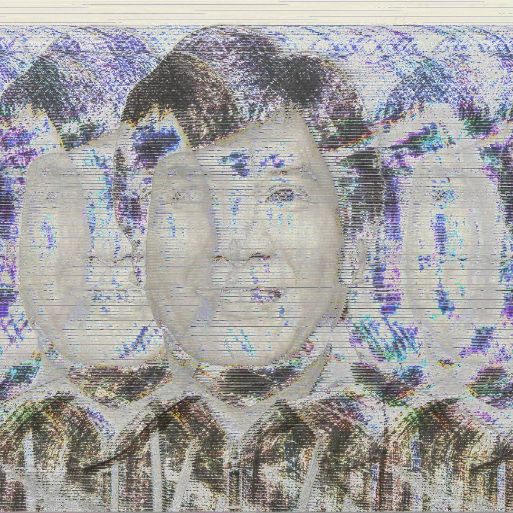
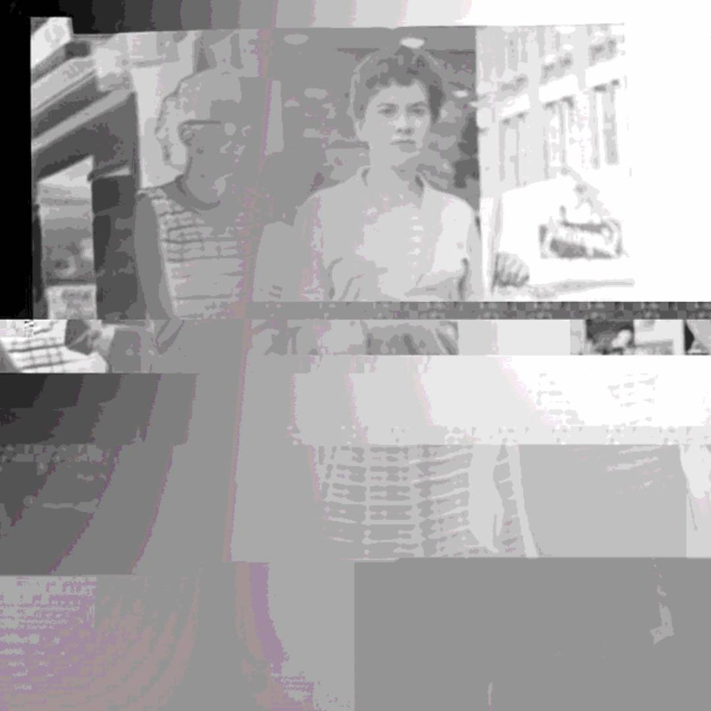

glitch art
The original images are pictures of my grandma + great aunt, my lola, and my lolo—or grandmother and grandfather in Tagalog. As my grandma has lost a lot of her memories and my lola and lolo have passed away, I realized that I missed the opportunity to hear about their lives, or specifically the stories behind each of these photos. Even so, would I have been able to comprehend a fraction of the complexity of their individual lives and experiences? In my series, Familial Sonder, I reflect on the idea that photographs are the only physical manifestation of the emotions, memories, and lives that my grandparents have lived; yet with time and age, even those are distorted or lost—represented through the glitches.


